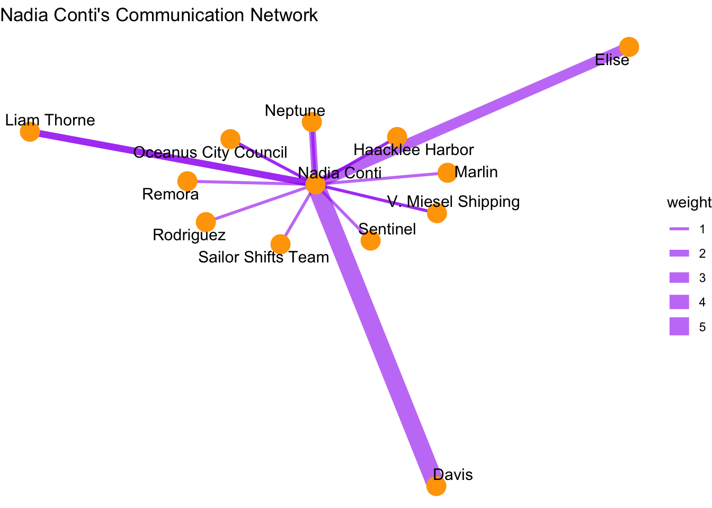
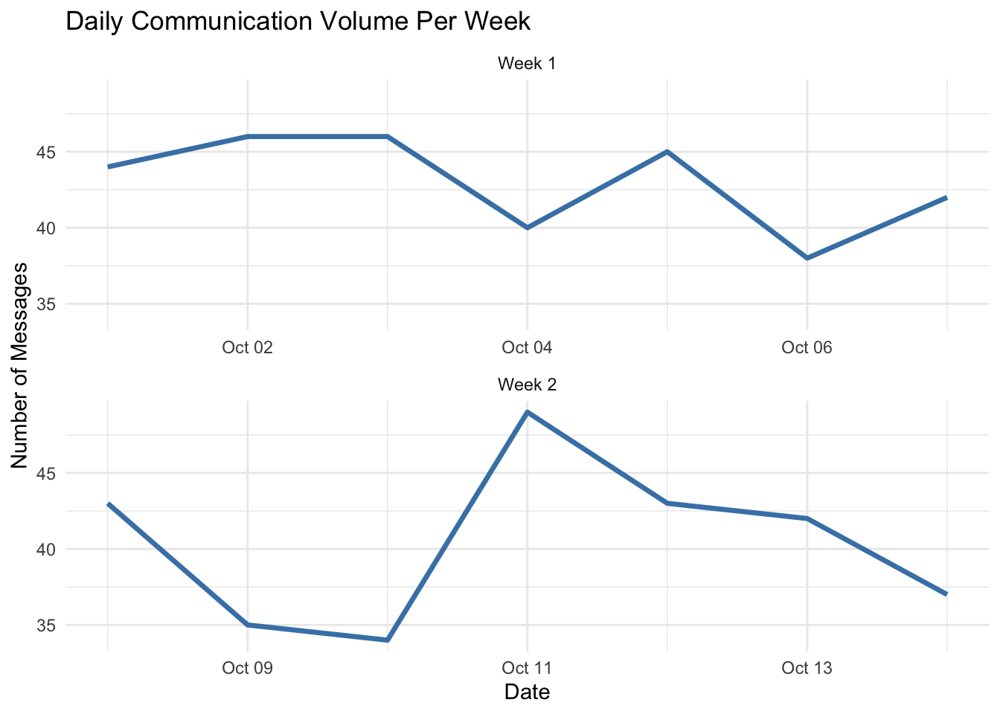
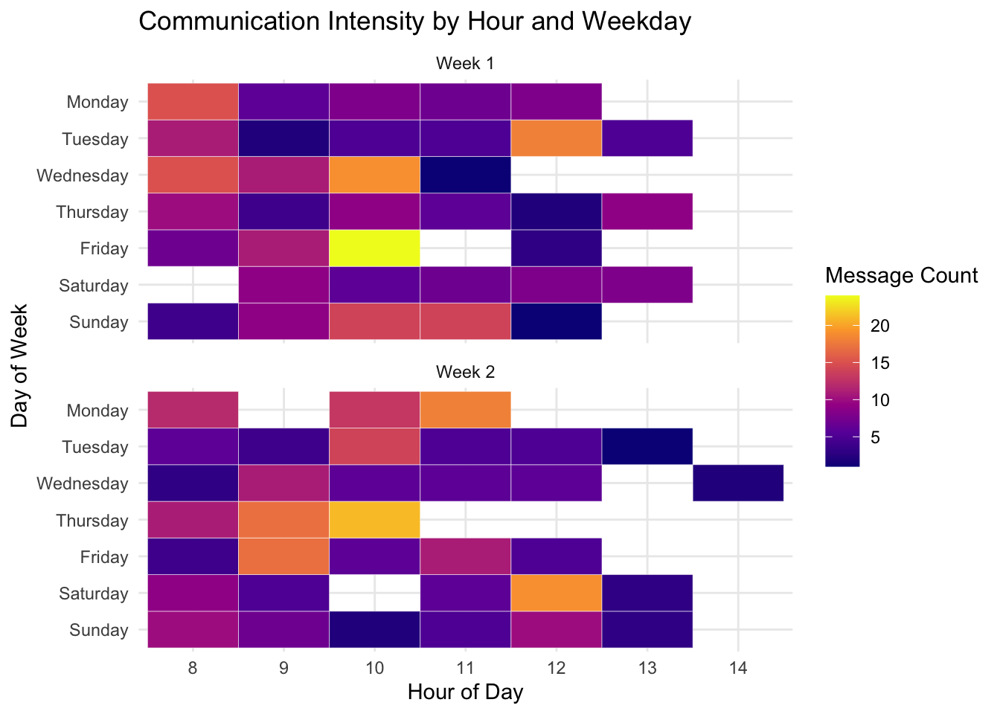

Code
options(repos = c(CRAN = "https://cloud.r-project.org"))
install.packages("pacman")NEW (12/06) - Hands-on Exercise 8 is published!
Vanessa Riadi
May 26, 2025
June 13, 2025
Clepper Jessen, an investigative journalist, is uncovering possible corruption in Oceanus linked to the closure of Nemo Reef and the arrival of pop star Sailor Shift. Using intercepted radio communications, a knowledge graph was created to map out interactions between people, vessels, and organizations. This Mini Challenge aims to support Clepper’s investigation through data-driven visual analytics, uncovering patterns, pseudonym usage, social groupings, and suspicious behavior—especially concerning Nadia Conti, a previously implicated figure in illegal fishing.
The Mini Challenge 3 tasked us to design and develop up to three graph-based data visualizations that:
Identify temporal patterns in communications.
Reveal relationships and influence among entities (people, vessels, groups).
Expose pseudonym usage and investigate Nadia Conti’s activity for potential misconduct.
This is part 1 of the Mini Challenge 3 where we will be looking at question 1:
Develop a graph-based visual analytics approach to identify any daily temporal patterns in communications.
How do these patterns shift over the two weeks of observations?
Focus on a specific entity and use this information to determine who has influence over them.
and question 3c) How does your understanding of activities change given your understanding of pseudonyms?
For part 2 go to Hoa’s Netlify page
For part 3 go to Summer’s Netlify page
RStudio and Quarto are used as the primary analytical tools for this challenge. The data will be analyzed and visualized using the tidyverse suite and advanced network visualization packages to explore the knowledge graph and temporal communication dynamics.
We then load the following R packages using the pacman::p_load() function:
The core dataset is a knowledge graph derived from radio communications intercepted over a two-week period on Oceanus. Each node in the graph represents an entity such as a person, vessel, pseudonym, or organization. Edges represent interactions or co-occurrences in communications. Edge attributes include timestamp, topic, message type, and possible pseudonym use.
Supplementary information from the story given on the Mini Challenge page includes:
Entity roles and affiliations (e.g., Green Guardians, Sailor Shift’s crew).
Known pseudonyms (e.g., “Boss”, “The Lookout”).
Historical involvement in illicit activities (e.g., Nadia Conti).
Refer to the data description details in Appendix A
List of 5
$ directed : logi TRUE
$ multigraph: logi FALSE
$ graph :List of 4
..$ mode : chr "static"
..$ edge_default: Named list()
..$ node_default: Named list()
..$ name : chr "VAST_MC3_Knowledge_Graph"
$ nodes :'data.frame': 1159 obs. of 31 variables:
..$ type : chr [1:1159] "Entity" "Entity" "Entity" "Entity" ...
..$ label : chr [1:1159] "Sam" "Kelly" "Nadia Conti" "Elise" ...
..$ name : chr [1:1159] "Sam" "Kelly" "Nadia Conti" "Elise" ...
..$ sub_type : chr [1:1159] "Person" "Person" "Person" "Person" ...
..$ id : chr [1:1159] "Sam" "Kelly" "Nadia Conti" "Elise" ...
..$ timestamp : chr [1:1159] NA NA NA NA ...
..$ monitoring_type : chr [1:1159] NA NA NA NA ...
..$ findings : chr [1:1159] NA NA NA NA ...
..$ content : chr [1:1159] NA NA NA NA ...
..$ assessment_type : chr [1:1159] NA NA NA NA ...
..$ results : chr [1:1159] NA NA NA NA ...
..$ movement_type : chr [1:1159] NA NA NA NA ...
..$ destination : chr [1:1159] NA NA NA NA ...
..$ enforcement_type : chr [1:1159] NA NA NA NA ...
..$ outcome : chr [1:1159] NA NA NA NA ...
..$ activity_type : chr [1:1159] NA NA NA NA ...
..$ participants : int [1:1159] NA NA NA NA NA NA NA NA NA NA ...
..$ thing_collected :'data.frame': 1159 obs. of 2 variables:
.. ..$ type: chr [1:1159] NA NA NA NA ...
.. ..$ name: chr [1:1159] NA NA NA NA ...
..$ reference : chr [1:1159] NA NA NA NA ...
..$ date : chr [1:1159] NA NA NA NA ...
..$ time : chr [1:1159] NA NA NA NA ...
..$ friendship_type : chr [1:1159] NA NA NA NA ...
..$ permission_type : chr [1:1159] NA NA NA NA ...
..$ start_date : chr [1:1159] NA NA NA NA ...
..$ end_date : chr [1:1159] NA NA NA NA ...
..$ report_type : chr [1:1159] NA NA NA NA ...
..$ submission_date : chr [1:1159] NA NA NA NA ...
..$ jurisdiction_type: chr [1:1159] NA NA NA NA ...
..$ authority_level : chr [1:1159] NA NA NA NA ...
..$ coordination_type: chr [1:1159] NA NA NA NA ...
..$ operational_role : chr [1:1159] NA NA NA NA ...
$ edges :'data.frame': 3226 obs. of 5 variables:
..$ id : chr [1:3226] "2" "3" "5" "3013" ...
..$ is_inferred: logi [1:3226] TRUE FALSE TRUE TRUE TRUE TRUE ...
..$ source : chr [1:3226] "Sam" "Sam" "Sam" "Sam" ...
..$ target : chr [1:3226] "Relationship_Suspicious_217" "Event_Communication_370" "Event_Assessment_600" "Relationship_Colleagues_430" ...
..$ type : chr [1:3226] NA "sent" NA NA ...List of 1
$ schema:List of 2
..$ nodes:List of 3
.. ..$ Entity :List of 2
.. ..$ Event :List of 2
.. ..$ Relationship:List of 2
..$ edges:List of 3
.. ..$ description: chr "Connections between nodes in the knowledge graph"
.. ..$ is_inferred: chr "bool"
.. ..$ types :'data.frame': 6 obs. of 5 variables:Let’s explore each edges and nodes!
First we need to extract the nodes and links tibble data frames using as_tibble() of tibble package package into two separate tibble dataframes called nodes_tbl and edges_tbl respectively.
| type | label | name | sub_type | id | timestamp | monitoring_type | findings | content | assessment_type | results | movement_type | destination | enforcement_type | outcome | activity_type | participants | thing_collected | reference | date | time | friendship_type | permission_type | start_date | end_date | report_type | submission_date | jurisdiction_type | authority_level | coordination_type | operational_role |
|---|---|---|---|---|---|---|---|---|---|---|---|---|---|---|---|---|---|---|---|---|---|---|---|---|---|---|---|---|---|---|
| Entity | Sam | Sam | Person | Sam | NA | NA | NA | NA | NA | NA | NA | NA | NA | NA | NA | NA | NA | NA | NA | NA | NA | NA | NA | NA | NA | NA | NA | NA | NA | NA |
| Entity | Kelly | Kelly | Person | Kelly | NA | NA | NA | NA | NA | NA | NA | NA | NA | NA | NA | NA | NA | NA | NA | NA | NA | NA | NA | NA | NA | NA | NA | NA | NA | NA |
| Entity | Nadia Conti | Nadia Conti | Person | Nadia Conti | NA | NA | NA | NA | NA | NA | NA | NA | NA | NA | NA | NA | NA | NA | NA | NA | NA | NA | NA | NA | NA | NA | NA | NA | NA | NA |
| Entity | Elise | Elise | Person | Elise | NA | NA | NA | NA | NA | NA | NA | NA | NA | NA | NA | NA | NA | NA | NA | NA | NA | NA | NA | NA | NA | NA | NA | NA | NA | NA |
| Entity | Liam Thorne | Liam Thorne | Person | Liam Thorne | NA | NA | NA | NA | NA | NA | NA | NA | NA | NA | NA | NA | NA | NA | NA | NA | NA | NA | NA | NA | NA | NA | NA | NA | NA | NA |
| Entity | Samantha Blake | Samantha Blake | Person | Samantha Blake | NA | NA | NA | NA | NA | NA | NA | NA | NA | NA | NA | NA | NA | NA | NA | NA | NA | NA | NA | NA | NA | NA | NA | NA | NA | NA |
| id | is_inferred | source | target | type |
|---|---|---|---|---|
| 2 | TRUE | Sam | Relationship_Suspicious_217 | NA |
| 3 | FALSE | Sam | Event_Communication_370 | sent |
| 5 | TRUE | Sam | Event_Assessment_600 | NA |
| 3013 | TRUE | Sam | Relationship_Colleagues_430 | NA |
| NA | TRUE | Sam | Relationship_Friends_272 | NA |
| NA | TRUE | Sam | Relationship_Colleagues_215 | NA |
In the code chunk below, ExpCatViz() of SmartEDA package is used to reveal the frequency distribution of all categorical fields in nodes_tbl dataframe.
Now we will reveal the frequency distribution of all categorical fields in edges_tbl dataframe.
A large proportion (32%) of edges have missing/undefined type values (NA). But as we’ve discovered from the earlier findings in earlier SmartEDA of nodes_tbl and glimpse(), we know that only certain type and sub_type have all information.
Significant portion of edges are evidence_for (32%), suggests more evidential or contextual links. Possibly connecting events or documents to people, vessels, or actions.
Communication events (e.g., who sent/received messages) only make up 18% each of the dataset means that communication-specific analyses should filter only these types, excluding NA and evidence_for.
These observations support the earlier suggestion in glimpse() to filter only communication related data for our visualisation later on.
After the initial EDA done in the previous chapter, we will performs the following data cleaning and data wrangling tasks:
comm_events <- nodes_tbl %>%
filter(type == "Event", sub_type == "Communication")
kable(head(comm_events))| type | label | name | sub_type | id | timestamp | monitoring_type | findings | content | assessment_type | results | movement_type | destination | enforcement_type | outcome | activity_type | participants | thing_collected | reference | date | time | friendship_type | permission_type | start_date | end_date | report_type | submission_date | jurisdiction_type | authority_level | coordination_type | operational_role |
|---|---|---|---|---|---|---|---|---|---|---|---|---|---|---|---|---|---|---|---|---|---|---|---|---|---|---|---|---|---|---|
| Event | Communication | NA | Communication | Event_Communication_1 | 2040-10-01 08:09:00 | NA | NA | Hey The Intern, it’s The Lookout! Just spotted a pod of dolphins near the eastern point this morning. They were so playful! If you’re free this weekend, the migratory birds are starting to arrive too. Let me know if you want to join for some birdwatching! | NA | NA | NA | NA | NA | NA | NA | NA | NA | NA | NA | NA | NA | NA | NA | NA | NA | NA | NA | NA | NA | NA |
| Event | Communication | NA | Communication | Event_Communication_2 | 2040-10-01 08:10:00 | NA | NA | Hey The Lookout, The Intern here! I’d absolutely love to join you for birdwatching this weekend! Those dolphins sound amazing. What time were you thinking? I’ll bring my new binoculars that Mrs. Money helped me pick out. | NA | NA | NA | NA | NA | NA | NA | NA | NA | NA | NA | NA | NA | NA | NA | NA | NA | NA | NA | NA | NA | NA |
| Event | Communication | NA | Communication | Event_Communication_3 | 2040-10-01 08:13:00 | NA | NA | Sam, it’s Kelly! Let’s meet at Sunrise Point at 7 AM for birdwatching. Bring your new binoculars and some water. I’ve heard there might be some rare shorebirds passing through this weekend. Can’t wait! | NA | NA | NA | NA | NA | NA | NA | NA | NA | NA | NA | NA | NA | NA | NA | NA | NA | NA | NA | NA | NA | NA |
| Event | Communication | NA | Communication | Event_Communication_5 | 2040-10-01 08:16:00 | NA | NA | Mrs. Money, it’s The Intern. Just checking in to see what tasks you need help with today. Also, I’ll be birdwatching with The Lookout this weekend. Should I reschedule if you need me for anything? | NA | NA | NA | NA | NA | NA | NA | NA | NA | NA | NA | NA | NA | NA | NA | NA | NA | NA | NA | NA | NA | NA |
| Event | Communication | NA | Communication | Event_Communication_6 | 2040-10-01 08:19:00 | NA | NA | Boss, it’s Mrs. Money. I’ve reviewed our operational funding for the upcoming projects. Need to discuss allocation priorities before our meeting with The Middleman next week. Are you available tomorrow afternoon? | NA | NA | NA | NA | NA | NA | NA | NA | NA | NA | NA | NA | NA | NA | NA | NA | NA | NA | NA | NA | NA | NA |
| Event | Communication | NA | Communication | Event_Communication_7 | 2040-10-01 08:21:00 | NA | NA | Mrs. Money, this is Boss. I’m available tomorrow at 3 PM to discuss funding allocations. Bring the updated projections for our tourism ventures. We need to ensure everything looks legitimate before meeting The Middleman next week. | NA | NA | NA | NA | NA | NA | NA | NA | NA | NA | NA | NA | NA | NA | NA | NA | NA | NA | NA | NA | NA | NA |
We’ll use id, timestamp and content
comm_events <- comm_events %>%
select(id, timestamp = timestamp, content = content)
kable(head(comm_events))| id | timestamp | content |
|---|---|---|
| Event_Communication_1 | 2040-10-01 08:09:00 | Hey The Intern, it’s The Lookout! Just spotted a pod of dolphins near the eastern point this morning. They were so playful! If you’re free this weekend, the migratory birds are starting to arrive too. Let me know if you want to join for some birdwatching! |
| Event_Communication_2 | 2040-10-01 08:10:00 | Hey The Lookout, The Intern here! I’d absolutely love to join you for birdwatching this weekend! Those dolphins sound amazing. What time were you thinking? I’ll bring my new binoculars that Mrs. Money helped me pick out. |
| Event_Communication_3 | 2040-10-01 08:13:00 | Sam, it’s Kelly! Let’s meet at Sunrise Point at 7 AM for birdwatching. Bring your new binoculars and some water. I’ve heard there might be some rare shorebirds passing through this weekend. Can’t wait! |
| Event_Communication_5 | 2040-10-01 08:16:00 | Mrs. Money, it’s The Intern. Just checking in to see what tasks you need help with today. Also, I’ll be birdwatching with The Lookout this weekend. Should I reschedule if you need me for anything? |
| Event_Communication_6 | 2040-10-01 08:19:00 | Boss, it’s Mrs. Money. I’ve reviewed our operational funding for the upcoming projects. Need to discuss allocation priorities before our meeting with The Middleman next week. Are you available tomorrow afternoon? |
| Event_Communication_7 | 2040-10-01 08:21:00 | Mrs. Money, this is Boss. I’m available tomorrow at 3 PM to discuss funding allocations. Bring the updated projections for our tourism ventures. We need to ensure everything looks legitimate before meeting The Middleman next week. |
| id | timestamp | content |
|---|---|---|
| Event_Communication_1 | 2040-10-01 08:09:00 | Hey The Intern, it’s The Lookout! Just spotted a pod of dolphins near the eastern point this morning. They were so playful! If you’re free this weekend, the migratory birds are starting to arrive too. Let me know if you want to join for some birdwatching! |
| Event_Communication_2 | 2040-10-01 08:10:00 | Hey The Lookout, The Intern here! I’d absolutely love to join you for birdwatching this weekend! Those dolphins sound amazing. What time were you thinking? I’ll bring my new binoculars that Mrs. Money helped me pick out. |
| Event_Communication_3 | 2040-10-01 08:13:00 | Sam, it’s Kelly! Let’s meet at Sunrise Point at 7 AM for birdwatching. Bring your new binoculars and some water. I’ve heard there might be some rare shorebirds passing through this weekend. Can’t wait! |
| Event_Communication_5 | 2040-10-01 08:16:00 | Mrs. Money, it’s The Intern. Just checking in to see what tasks you need help with today. Also, I’ll be birdwatching with The Lookout this weekend. Should I reschedule if you need me for anything? |
| Event_Communication_6 | 2040-10-01 08:19:00 | Boss, it’s Mrs. Money. I’ve reviewed our operational funding for the upcoming projects. Need to discuss allocation priorities before our meeting with The Middleman next week. Are you available tomorrow afternoon? |
| Event_Communication_7 | 2040-10-01 08:21:00 | Mrs. Money, this is Boss. I’m available tomorrow at 3 PM to discuss funding allocations. Bring the updated projections for our tourism ventures. We need to ensure everything looks legitimate before meeting The Middleman next week. |
comm_edges <- edges_tbl %>%
filter(type %in% c("sent", "received")) %>%
select(source, target, type)
kable(head(comm_edges))| source | target | type |
|---|---|---|
| Sam | Event_Communication_370 | sent |
| Kelly | Event_Communication_3 | sent |
| Kelly | Event_Communication_443 | sent |
| Nadia Conti | Event_Communication_331 | sent |
| Nadia Conti | Event_Communication_334 | sent |
| Nadia Conti | Event_Communication_529 | sent |
| sender | message_id | type.x | receiver | type.y |
|---|---|---|---|---|
| Sam | Event_Communication_370 | sent | Kelly | received |
| Kelly | Event_Communication_3 | sent | Sam | received |
| Kelly | Event_Communication_443 | sent | Sam | received |
| Nadia Conti | Event_Communication_331 | sent | Haacklee Harbor | received |
| Nadia Conti | Event_Communication_334 | sent | Oceanus City Council | received |
| Nadia Conti | Event_Communication_529 | sent | Liam Thorne | received |
comm_full <- comm_pairs %>%
left_join(comm_events, by = c("message_id" = "id"))
kable(head(comm_full))| sender | message_id | type.x | receiver | type.y | timestamp | content |
|---|---|---|---|---|---|---|
| Sam | Event_Communication_370 | sent | Kelly | received | 2040-10-05 10:48:00 | Hey Kelly, it’s Sam. This permit approval seems fishy. Could you get details on who signed off on it while you’re at the harbor? I need to understand these ‘special access corridors’ before my meeting with Elise tomorrow. |
| Kelly | Event_Communication_3 | sent | Sam | received | 2040-10-01 08:13:00 | Sam, it’s Kelly! Let’s meet at Sunrise Point at 7 AM for birdwatching. Bring your new binoculars and some water. I’ve heard there might be some rare shorebirds passing through this weekend. Can’t wait! |
| Kelly | Event_Communication_443 | sent | Sam | received | 2040-10-07 08:11:00 | Hey Sam, it’s Kelly! Got some photos of those crates - definitely marked ‘fragile’ and ‘handle with care.’ Neptune’s crew is being super secretive. They’re using special loading equipment I’ve never seen before. See you at 7 for birdwatching! |
| Nadia Conti | Event_Communication_331 | sent | Haacklee Harbor | received | 2040-10-05 09:45:00 | Haacklee Harbor, this is Nadia Conti. I need to cancel the special access corridor arrangements for Nemo Reef immediately. Plans have changed due to unforeseen circumstances. Destroy all related documentation. I’ll contact you when we’re ready to proceed with alternative locations. |
| Nadia Conti | Event_Communication_334 | sent | Oceanus City Council | received | 2040-10-05 09:49:00 | This is Nadia Conti. My cancellation was due to scheduling conflicts with our tourism development initiatives. I wasn’t aware of any permit approvals. I’ll submit revised documentation for alternative sustainable tourism proposals next week. |
| Nadia Conti | Event_Communication_529 | sent | Liam Thorne | received | 2040-10-08 08:18:00 | Liam, Nadia here. Need your services urgently. Investigation brewing around Nemo Reef permits. Double your usual fee if you can ensure Harbor Master remains cooperative through next week. Meet at the usual place tomorrow, 10PM. |
comm_full <- comm_full %>%
left_join(entity_labels, by = c("sender" = "id")) %>%
rename(sender_label = label, sender_type = sub_type) %>%
left_join(entity_labels, by = c("receiver" = "id")) %>%
rename(receiver_label = label, receiver_type = sub_type)
kable(head(comm_full))| sender | message_id | type.x | receiver | type.y | timestamp | content | sender_label | sender_type | receiver_label | receiver_type |
|---|---|---|---|---|---|---|---|---|---|---|
| Sam | Event_Communication_370 | sent | Kelly | received | 2040-10-05 10:48:00 | Hey Kelly, it’s Sam. This permit approval seems fishy. Could you get details on who signed off on it while you’re at the harbor? I need to understand these ‘special access corridors’ before my meeting with Elise tomorrow. | Sam | Person | Kelly | Person |
| Kelly | Event_Communication_3 | sent | Sam | received | 2040-10-01 08:13:00 | Sam, it’s Kelly! Let’s meet at Sunrise Point at 7 AM for birdwatching. Bring your new binoculars and some water. I’ve heard there might be some rare shorebirds passing through this weekend. Can’t wait! | Kelly | Person | Sam | Person |
| Kelly | Event_Communication_443 | sent | Sam | received | 2040-10-07 08:11:00 | Hey Sam, it’s Kelly! Got some photos of those crates - definitely marked ‘fragile’ and ‘handle with care.’ Neptune’s crew is being super secretive. They’re using special loading equipment I’ve never seen before. See you at 7 for birdwatching! | Kelly | Person | Sam | Person |
| Nadia Conti | Event_Communication_331 | sent | Haacklee Harbor | received | 2040-10-05 09:45:00 | Haacklee Harbor, this is Nadia Conti. I need to cancel the special access corridor arrangements for Nemo Reef immediately. Plans have changed due to unforeseen circumstances. Destroy all related documentation. I’ll contact you when we’re ready to proceed with alternative locations. | Nadia Conti | Person | Haacklee Harbor | Location |
| Nadia Conti | Event_Communication_334 | sent | Oceanus City Council | received | 2040-10-05 09:49:00 | This is Nadia Conti. My cancellation was due to scheduling conflicts with our tourism development initiatives. I wasn’t aware of any permit approvals. I’ll submit revised documentation for alternative sustainable tourism proposals next week. | Nadia Conti | Person | Oceanus City Council | Organization |
| Nadia Conti | Event_Communication_529 | sent | Liam Thorne | received | 2040-10-08 08:18:00 | Liam, Nadia here. Need your services urgently. Investigation brewing around Nemo Reef permits. Double your usual fee if you can ensure Harbor Master remains cooperative through next week. Meet at the usual place tomorrow, 10PM. | Nadia Conti | Person | Liam Thorne | Person |
Step 1: Deriving weekday and hour of day fields
Create two new fields namely weekday and hour. In this step, we will write a function to perform the task.
Step 2: Deriving the communication tibble data frame
weekday_levels <- c("Sunday", "Saturday", "Friday",
"Thursday","Wednesday","Tuesday", "Monday")
comm_full <- comm_full %>%
mutate(
date = as.Date(timestamp),
weekday = factor(weekdays(timestamp), levels = weekday_levels),
hour = factor(hour(timestamp), levels = 0:23),
week = isoweek(timestamp),
week_label = case_when(
isoweek(timestamp) == min(isoweek(timestamp)) ~ "Week 1",
isoweek(timestamp) == max(isoweek(timestamp)) ~ "Week 2",
TRUE ~ "Other")
)Beside extracting the necessary data into attacks data frame, mutate() of dplyr package is used to convert weekday and hour fields into factor so they’ll be ordered when plotting
Table below shows the tidy tibble table after processing.
| sender | message_id | type.x | receiver | type.y | timestamp | content | sender_label | sender_type | receiver_label | receiver_type | date | weekday | hour | week | week_label |
|---|---|---|---|---|---|---|---|---|---|---|---|---|---|---|---|
| Sam | Event_Communication_370 | sent | Kelly | received | 2040-10-05 10:48:00 | Hey Kelly, it’s Sam. This permit approval seems fishy. Could you get details on who signed off on it while you’re at the harbor? I need to understand these ‘special access corridors’ before my meeting with Elise tomorrow. | Sam | Person | Kelly | Person | 2040-10-05 | Friday | 10 | 40 | Week 1 |
| Kelly | Event_Communication_3 | sent | Sam | received | 2040-10-01 08:13:00 | Sam, it’s Kelly! Let’s meet at Sunrise Point at 7 AM for birdwatching. Bring your new binoculars and some water. I’ve heard there might be some rare shorebirds passing through this weekend. Can’t wait! | Kelly | Person | Sam | Person | 2040-10-01 | Monday | 8 | 40 | Week 1 |
| Kelly | Event_Communication_443 | sent | Sam | received | 2040-10-07 08:11:00 | Hey Sam, it’s Kelly! Got some photos of those crates - definitely marked ‘fragile’ and ‘handle with care.’ Neptune’s crew is being super secretive. They’re using special loading equipment I’ve never seen before. See you at 7 for birdwatching! | Kelly | Person | Sam | Person | 2040-10-07 | Sunday | 8 | 40 | Week 1 |
| Nadia Conti | Event_Communication_331 | sent | Haacklee Harbor | received | 2040-10-05 09:45:00 | Haacklee Harbor, this is Nadia Conti. I need to cancel the special access corridor arrangements for Nemo Reef immediately. Plans have changed due to unforeseen circumstances. Destroy all related documentation. I’ll contact you when we’re ready to proceed with alternative locations. | Nadia Conti | Person | Haacklee Harbor | Location | 2040-10-05 | Friday | 9 | 40 | Week 1 |
| Nadia Conti | Event_Communication_334 | sent | Oceanus City Council | received | 2040-10-05 09:49:00 | This is Nadia Conti. My cancellation was due to scheduling conflicts with our tourism development initiatives. I wasn’t aware of any permit approvals. I’ll submit revised documentation for alternative sustainable tourism proposals next week. | Nadia Conti | Person | Oceanus City Council | Organization | 2040-10-05 | Friday | 9 | 40 | Week 1 |
| Nadia Conti | Event_Communication_529 | sent | Liam Thorne | received | 2040-10-08 08:18:00 | Liam, Nadia here. Need your services urgently. Investigation brewing around Nemo Reef permits. Double your usual fee if you can ensure Harbor Master remains cooperative through next week. Meet at the usual place tomorrow, 10PM. | Nadia Conti | Person | Liam Thorne | Person | 2040-10-08 | Monday | 8 | 41 | Week 2 |
For the purpose of this Take Home Exercise, we will extract out to CSV so the rest of the group can work with this cleaned data!
For part 1a and 1b of the Mini Challenge 3 Let’s look specifically into event nodes where communications occur.
comm_full %>%
count(date) %>%
ggplot(aes(x = date, y = n)) +
geom_line(color = "steelblue", size = 1.2) +
labs(
title = "Daily Communication Volume Over 2 Weeks",
x = "Date", y = "Number of Messages"
) +
theme_minimal()
comm_full %>%
count(week_label, date) %>%
ggplot(aes(x = date, y = n)) +
geom_line(color = "steelblue", size = 1.2) +
facet_wrap(~ week_label, scales = "free_x", ncol = 1, labeller = label_value) +
labs(
title = "Daily Communication Volume Per Week",
x = "Date", y = "Number of Messages"
) +
theme_minimal()
comm_hourly_weekly <- comm_full %>%
count(week_label, weekday, hour)
ggplot(comm_hourly_weekly, aes(x = hour, y = weekday, fill = n)) +
geom_tile(color = "white") +
scale_fill_viridis_c(option = "plasma", name = "Message Count") +
labs(title = "Communication Intensity by Hour and Weekday",
x = "Hour of Day", y = "Day of Week") +
facet_wrap(~ week_label, ncol = 1) +
theme_minimal()
In Week 1, daily messages volume remains relatively stable. This suggests routine or planned activity, likely related to operational coordination or normal business across the island.
However, in Week 2, the communication pattern becomes more volatile:
There’s a sharp drop at the start of the week (Oct 08–09), possibly indicating reduced activity or deliberate radio silence.
This is followed by a sudden spike on Oct 11 which is day 1 of the closure of Nemo Reef lasting 3 days up to Oct 13.
The remainder of the week shows a steady decline.
The hourly heatmap supports this shift:
In Week 1, communication is consistently concentrated during specific hours of the day (e.g., mornings or early evenings), reflecting regular daily routines.
In Week 2, these temporal patterns shift, with more dispersed or intensified communication on certain days — especially around the spike, indicating possible emergency coordination or reactive behavior.
For part 1c of the Mini Challenge 3 we will be looking at the influence over the nodes.
Influence could be indicated by:
Frequent communication to or from the target
One-way communication (many messages received, few sent)
Connected intermediaries (network centrality or shared contacts)
Let’s look into the network graph:
# Create edge list
graph_edges <- comm_full %>%
count(sender_label, receiver_label) %>%
filter(!is.na(sender_label), !is.na(receiver_label)) %>%
rename(from = sender_label, to = receiver_label, value = n)
# Create node list from edges
graph_nodes <- tibble(name = unique(c(graph_edges$from, graph_edges$to))) %>%
mutate(id = name, label = name, group = name)
# visNetwork expects numeric node IDs, but we can use labels for both
visNetwork(nodes = graph_nodes, edges = graph_edges) %>%
visEdges(arrows = "to") %>%
visOptions(highlightNearest = TRUE, nodesIdSelection = TRUE) %>%
visLayout(randomSeed = 123) %>%
visPhysics(stabilization = TRUE) %>%
visInteraction(navigationButtons = TRUE) %>%
visLegend()Deep dive
# Create edge list
graph_edges <- comm_full %>%
filter(receiver_type == "Person" & sender_type == "Person") %>%
count(sender_label, receiver_label) %>%
filter(!is.na(sender_label), !is.na(receiver_label)) %>%
rename(from = sender_label, to = receiver_label, value = n)
# Create node list from edges
graph_nodes <- tibble(name = unique(c(graph_edges$from, graph_edges$to))) %>%
mutate(id = name, label = name, group = name)
# visNetwork expects numeric node IDs, but we can use labels for both
visNetwork(nodes = graph_nodes, edges = graph_edges) %>%
visEdges(arrows = "to") %>%
visOptions(highlightNearest = TRUE, nodesIdSelection = TRUE) %>%
visLayout(randomSeed = 123) %>%
visPhysics(stabilization = TRUE) %>%
visInteraction(navigationButtons = TRUE) %>%
visLegend()# Create edge list
graph_edges2 <- comm_full %>%
filter(receiver_type == "Person" & sender_type == "Vessel") %>%
count(sender_label, receiver_label) %>%
filter(!is.na(sender_label), !is.na(receiver_label)) %>%
rename(from = sender_label, to = receiver_label, value = n)
# Create node list from edges
graph_nodes <- tibble(name = unique(c(graph_edges2$from, graph_edges2$to))) %>%
mutate(id = name, label = name, group = name)
# visNetwork expects numeric node IDs, but we can use labels for both
visNetwork(nodes = graph_nodes, edges = graph_edges2) %>%
visEdges(arrows = "to") %>%
visOptions(highlightNearest = TRUE, nodesIdSelection = TRUE) %>%
visLayout(randomSeed = 123) %>%
visPhysics(stabilization = TRUE) %>%
visInteraction(navigationButtons = TRUE) %>%
visLegend()# Create edge list
graph_edges2 <- comm_full %>%
filter(receiver_type == "Vessel" & sender_type == "Person") %>%
count(sender_label, receiver_label) %>%
filter(!is.na(sender_label), !is.na(receiver_label)) %>%
rename(from = sender_label, to = receiver_label, value = n)
# Create node list from edges
graph_nodes <- tibble(name = unique(c(graph_edges2$from, graph_edges2$to))) %>%
mutate(id = name, label = name, group = name)
# visNetwork expects numeric node IDs, but we can use labels for both
visNetwork(nodes = graph_nodes, edges = graph_edges2) %>%
visEdges(arrows = "to") %>%
visOptions(highlightNearest = TRUE, nodesIdSelection = TRUE) %>%
visLayout(randomSeed = 123) %>%
visPhysics(stabilization = TRUE) %>%
visInteraction(navigationButtons = TRUE) %>%
visLegend()# Create edge list
graph_edges2 <- comm_full %>%
filter(receiver_type == "Organization" & sender_type == "Person") %>%
count(sender_label, receiver_label) %>%
filter(!is.na(sender_label), !is.na(receiver_label)) %>%
rename(from = sender_label, to = receiver_label, value = n)
# Create node list from edges
graph_nodes <- tibble(name = unique(c(graph_edges2$from, graph_edges2$to))) %>%
mutate(id = name, label = name, group = name)
# visNetwork expects numeric node IDs, but we can use labels for both
visNetwork(nodes = graph_nodes, edges = graph_edges2) %>%
visEdges(arrows = "to") %>%
visOptions(highlightNearest = TRUE, nodesIdSelection = TRUE) %>%
visLayout(randomSeed = 123) %>%
visPhysics(stabilization = TRUE) %>%
visInteraction(navigationButtons = TRUE) %>%
visLegend()From the network graph, we observe these top affiliated entities based on communication frequency, categorized by type. Further frequency check was also conducted using pivot table in excel using the CSV exported earlier:
Green Guardian (Organization) has the highest number of communication sent, they are the local conservationist group who is central to the Nemo Reef conflict.
Top 2 receiver and sender is actually Oceanus City Council which is a key governing body, possibly linked to expedited approvals.
V. Miesel Shipping seems to be the potential marine logistic partner for this illegal activity based on the network graph. Further investigation done and found in Event_Communication_201 by Clepper and Miranda that V. Miesel Shipping is possibly a shell company. Miranda traced V. Miesel Shipping to an offshore account linked to Councilor Knowles’ brother-in-law
Mako (Vessel) has the highest number of communication received , likely crucial in coordination or transport.
Reef Guardian — potentially linked with conservation, possibly under Green Guardians.
Remora (62 messages), Neptune (60), Sentinel (41), Horizon (36), EcoVigil (29) — may play roles in patrol, logistics, or covert operations.
“Boss” appears to be high-ranking, managing flow between entities like Mrs. Money (possibly financial operator) and Middleman (coordinator). Their involvement with Mako and shipping entities implies they may be central to illicit logistics or moving resources/people covertly.
“The Intern” is likely a junior operative or data/communications relay, possibly linked directly to Mrs. Money. Their mirrored exchanges with “The Lookout” point toward coordinated surveillance or monitoring tasks.
“The Lookout” acts as a watcher/spotter, deeply involved in tracking activity around conservation zones. Their tie to Sam and Green Guardians might indicate a dual role or impersonation within the environmental group.
We observe that Davis is receiving messages from or sending to “Boss”, he also observed giving instructions to Mako (a high-traffic vessel). It’s plausible that Davis may play a hands-on operational role, where he is looped into the command chain, receives instructions from Boss, relays or enforces those orders to operatives (e.g., Mako, vessel contacts). Further investigation done in the excel CSV exported earlier and found that Event_Communication_343 from Davis revealed in the content that he is Captain Davis who is in charge of Mako.
Liam Thorne seems to be a double agent who is officially working for Oceanus City Council but reporting to the illegal group as an informant (this is confirmed after reading through the detail communication contents), facilitating or delay approvals, making him crucial in the closure of Nemo Reef or the Sailor Shift project.
Councilor Knowles is affiliated with V. Miesel Shipping.
For part 3c of the Mini Challenge 3 we will be reflecting on what have been uncovered earlier.
We now know that the Nemo Reef closure not as a public safety or ecological move but as a coordinated action likely benefiting Sailor Shift’s team (filming) or facilitating illegal transitions (e.g., laundering operations into tourism). The expedited logistics and vessel movements are also calculated move that may represent covert transport or cover-up operations.
- VAST 2024 Mini Challenge 3
- jsonlite: A robust and high-performance JSON parser and generator for R, useful for working with web APIs and structured data.
- tibble: A modern reimagining of data frames in R that prints cleaner and is better for programming.
- dplyr: A grammar of data manipulation, making data wrangling concise, fast, and readable.
- knitr: A dynamic report generation tool in R, used for rendering markdown reports and tables.
- SmartEDA: Automatically generates EDA reports including statistical summaries and visualizations.
- lubridate: Simplifies the parsing, manipulation, and extraction of date-time data.
- readr: Provides fast and friendly functions for reading and writing rectangular data (e.g., CSV).
- ggplot2: A versatile and widely used R package for creating elegant data visualizations based on the Grammar of Graphics.
- visNetwork: Enables interactive network visualizations in R using the vis.js JavaScript library.
- tidygraph: Provides a tidy framework for network analysis, integrating graph theory with tidy data principles.
- ggraph: Extends ggplot2 to visualize network and graph structures with customizable layouts.
- ggrepel: Automatically adjusts overlapping text labels in ggplot2 and ggraph visualizations to improve clarity.